概括
把一份课程通知压缩为三条要点
生成式人工智能 · 专业导论
 VER. 2611.3
Built with impress.js
VER. 2611.3
Built with impress.js
原理、原因、现状、未来
多样化的使用经验
问个问题
完成作业
搭建工具
CNNIC 连续调查
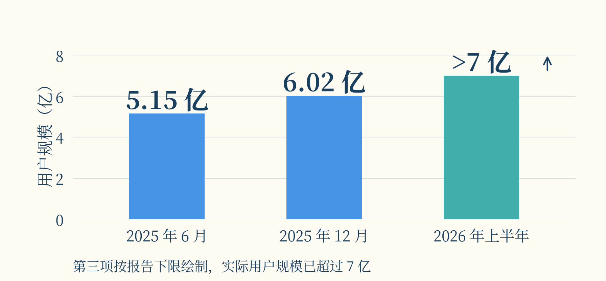
来源：CNNIC，2025 年中 · 2025 年末 · 2026 年上半年
2026 年报告中的生成式 AI 用途，允许多选
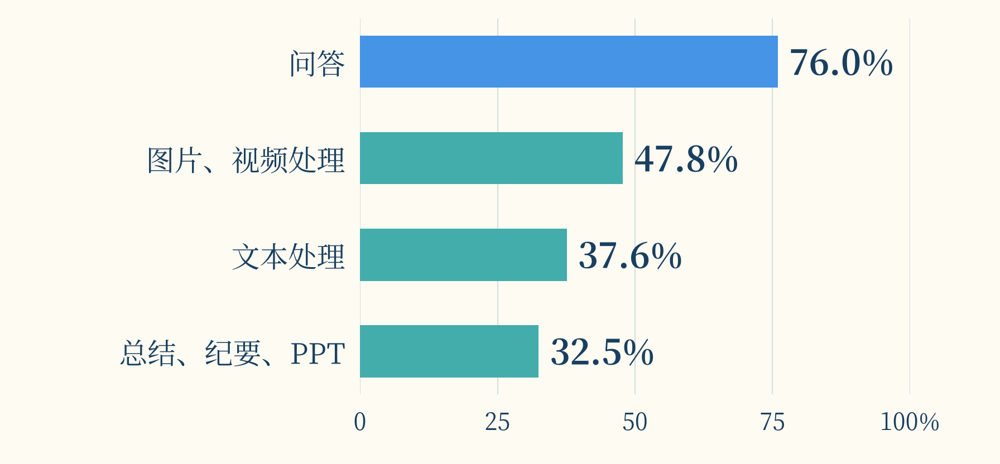
根据上下文，逐步预测并生成后续 token
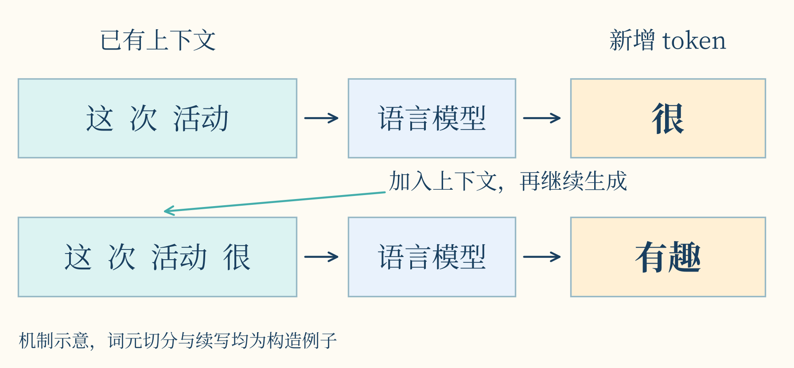
来源：依据 Transformer 与自回归生成原理绘制，构造例子
token 可以是字、词片段或其他符号
目标和材料共同影响模型生成的内容
把一份课程通知压缩为三条要点
把通知中的选课要求讲给新生听
从通知中提取截止日期和待办事项
经典扩散方法学习去噪，并在条件引导下生成图像样本
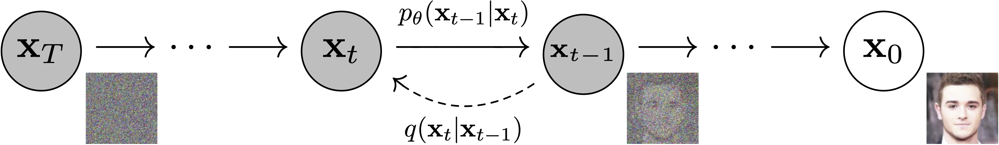
训练时，学习不同噪声程度下的恢复方向
生成时，从噪声出发，逐步得到图像
以 Gemini 技术报告为例，不同模态进入同一模型
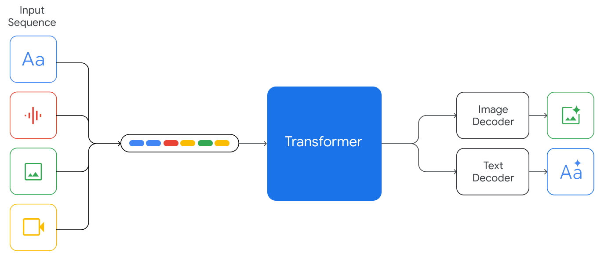
文字、声音、图像、视频，经由统一处理后，输出图文
模型的进步，通过产品与使用方法进入具体任务
模型提供能力
应用组织工作
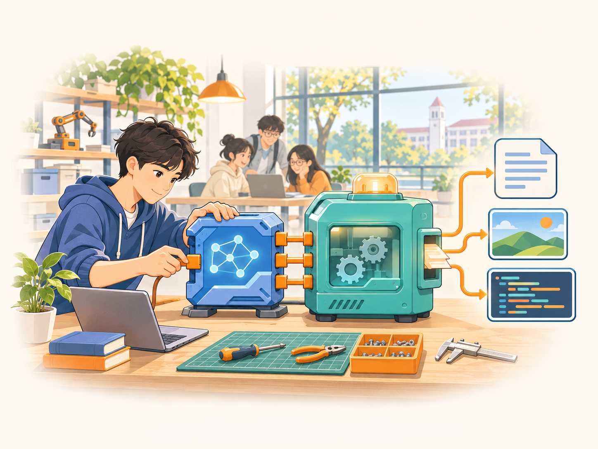
对话入口与开放图像生态，让更多人接触生成能力
公开模型与代码
出现图像创作应用和工作流
自然语言对话
提供大语言模型的 Web 入口
模型开始处理更复杂的要求，以及更多形式的输入
复杂指令和图文输入
能力发布与功能开放分离
围绕多模态设计模型
实现统一多模态处理
语音、视频与工具接口，拓展使用边界
语音、视觉与文本交互，2024 年 5 月
视频生成研究展示，2024 年 2 月
应用连接数据与工具的协议，2024 年 11 月
模型解决复杂问题，应用组织完整任务
DeepSeek-R1、GLM-4.5
推理训练、计算预算与开放模型
Claude Code、Codex
连接仓库、运行工具、执行测试
来源：DeepSeek-R1 · Qwen3 · GLM-4.5 · Claude Code · Codex · 截至 2025 年发布节点
工作区、插件、任务状态，成为产品标准能力
以桌面应用组织模型、文件与执行工具
“一切皆插件”思路
面向办公任务，引入工作上下文
不同应用出现了不同的发展趋势
| 任务入口 | 代表性的应用 | 主要能力 |
|---|---|---|
| 对话与资料 | ChatGPT、Claude、豆包、DeepSeek | 输入、回答 |
| 模型与开发 | DeepSeek、GLM、Qwen | 模型、部署 |
| 软件任务 | Codex、Claude Code | 仓库、执行、测试 |
| 综合工作 | WorkBuddy、豆包工作、DeepSeek Harness | 资料、工具、流程 |
| 视觉内容 | Stable Diffusion、可灵、Seedance | 生成、编辑、制作 |
人们尝试任务、总结方法，再把方法融入应用
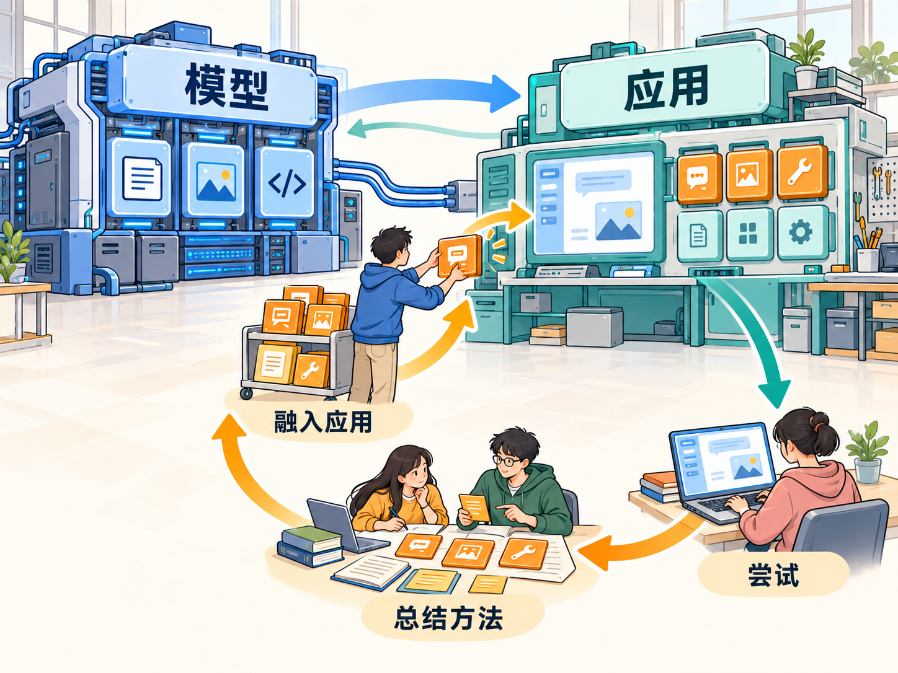
有效的使用方法，成为应用的组成部分
提供全面资料、拆分任务、运行检查
连接知识库、工具、进度记录与测试
更多人直接使用已经组织好的能力
不同数据进入不同环节，影响模型与应用的改进
经专门训练，影响模型参数与能力
作为上下文，帮助完成眼前任务
检查结果，为后续改进提供依据
目标、资料与运行过程，需要认真设计
表达目标、要求、示例与输出形式
选择并维护相关资料、状态与约束
组织模型、工具、执行、反馈与验证
模型生成之外，应用还可以检索材料和执行操作
检索增强生成，找到相关资料供模型回答
模型提出调用，应用执行并返回结果
为应用连接数据与工具提供统一协议
把任务说明、步骤与资源整理成可复用方法
模型选择行动，应用编排执行并返回反馈
明确要交付什么，以及完成条件
读取资料、检索、计算或修改文件
读取工具结果、报错或测试结果
调整下一步，检查后输出结果
案例：为学校制作一份带数据和来源的活动总结
AI 的真实采用、效率、质量和收入
任务改变
数据支持
Stack Overflow 2025 调查，专业开发者每日使用 AI 的比例
51%
数据来源：社区自选问卷中的专业开发者样本
结果会受任务、开发者经验和工具条件影响
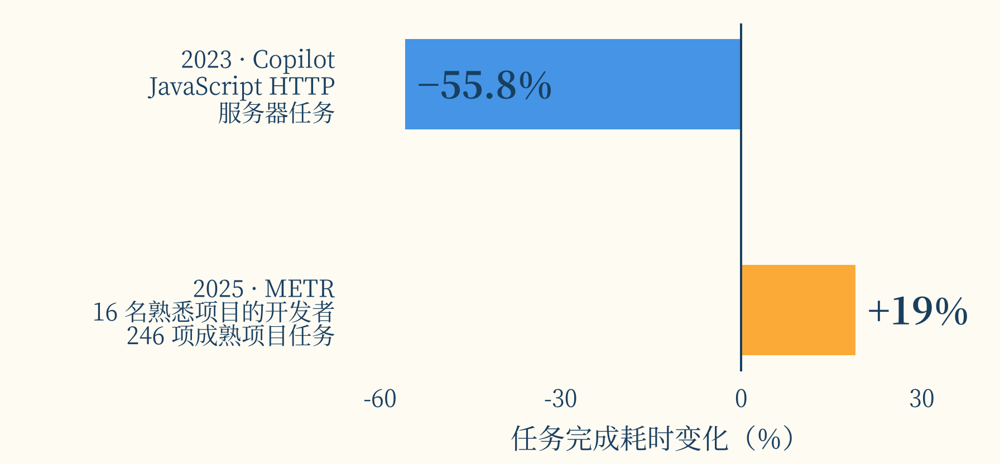
来源：Peng 等，2023 · METR，2025
2023 年职业写作实验
参与者更快完成指定写作任务
独立评分中的平均质量提高
任务对事实精度、客户偏好和企业背景的要求有限
Adobe 2025 调查中的创作者，86% 使用创意生成式 AI
| 使用方式 | 受访者占比 |
|---|---|
| 编辑、增强或放大内容 | 55% |
| 生成新的素材 | 52% |
| 创意构思 | 48% |
调查样本：八个国家的 16,000 余名创作者，以新兴及半专业创作者为主
广电总局发布会披露，2026 年前八个月上线微短剧
上线微短剧总量
其中被列为 AI 剧的部数占比
凸显出供给和需求的矛盾
可灵披露，2025 年 12 月单月收入超过
2,000 万美元
按该月收入年化，约为 2.4 亿美元
5,172 名客服人员的研究，每小时解决问题数平均增加
15%
新手与低技能人员的收益更大
受访者报告，本组织经常在至少一项职能使用生成式 AI
2023 年调查
2024 年调查
各期受访样本构成可能不同
McKinsey 2026 调查，报告扩大 Agent 部署的受访者
年收入超过 10 亿美元的组织
上年为 27%
报告中的小型组织
与上年接近
资料整合、组织改造和成本，影响部署推进速度
McKinsey 调查，本组织因 AI 减员的预期与报告结果
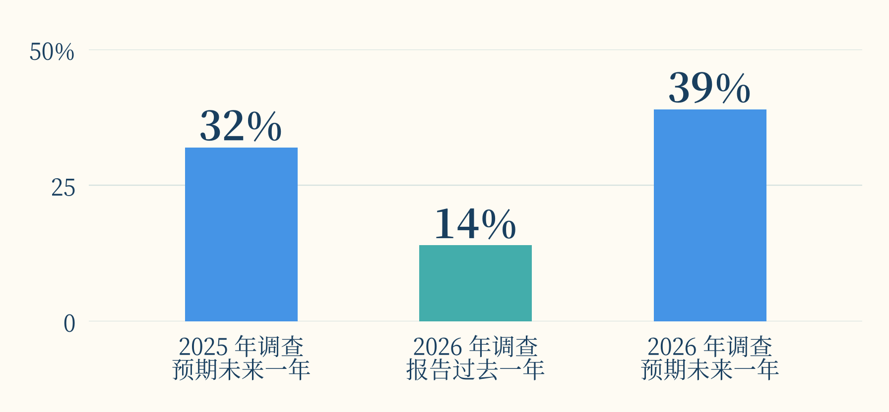
WEF 的雇主调查，综合技术、经济、人口等宏观趋势
2023 年报告预测到 2027 年
综合多类趋势的岗位变化
2025 年报告预测到 2030 年
综合多类趋势的岗位变化
来源：WEF《未来就业报告 2023》 · 2025 年版
各项条件都在变化
未来几年的条件与选择
模型与应用进步
企业与岗位变化
基于已有进展，考虑能力、成本与可靠性的共同变化
在更复杂的信息和任务中保持一致
连续推进多步工作，接受过程评估
在质量、速度、部署与费用之间取舍
模型能力与工程实践，将共同进入日常工具
更好连接文档、数据库与业务上下文
保存进度，衔接工具与人的决策
保留来源、测试、操作记录与交接条件
ILO 2025 研究，全球就业中处于一定 GenAI 暴露职业的比例
约 25%
Anthropic 以美国职业任务和 Claude 使用记录衡量覆盖
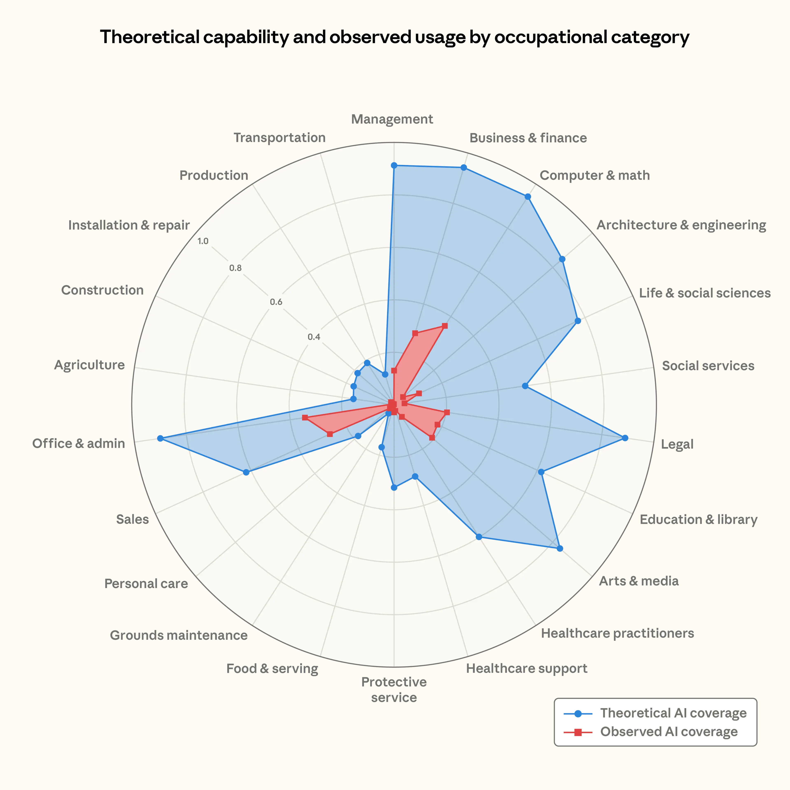
计算机与数学类任务
理论覆盖 94%
Claude 观察覆盖 33%
距离全面落地，还需要业务流程、现有工具配合
国家、年龄与观察窗口不同
截至 2026 年 6 月，22—25 岁高暴露职业相对低暴露同龄组的就业差距约为 −19%
主要经由招聘减少
约两年内，工资与记录工时的估计变化接近零
同时观察到任务重组
估值与投入能否获得持续回报
用户是否持续使用，收入能否增长
算力、能源和研发投入能否收回
盈利预期、债务与关联融资怎样变化
基于研究的条件推演
收入覆盖新增成本
应用持续普及，竞争更关注任务价值
收益慢于预期
产品退出、并购与价格调整增加
债务压力相互传导
项目放缓，招聘与供应商承压
把专业知识用于定义任务、组织数据和检查交付
预算有限，也可以逐步积累完成任务的经验
整理课程资料、核对表格或制作一份说明
按任务选择免费入口，保留输入与结果
记录效果、错误、耗时与自己的修改
一起探索如何将 AI 用于实际问题
打磨想法
构建真实解决方案
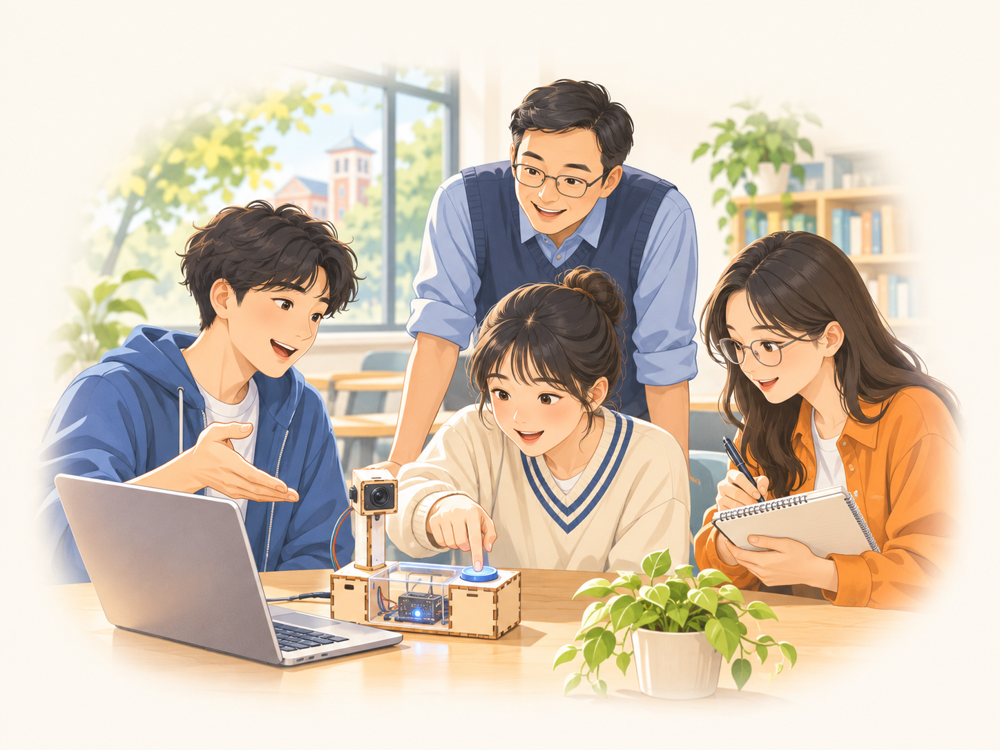
几个活动方向提议
交流一个有效方法，以及遇到的问题
围绕学习或生活需求，做出初步成果
让同伴试用，依据反馈继续修改
带着想法与作品，继续出发